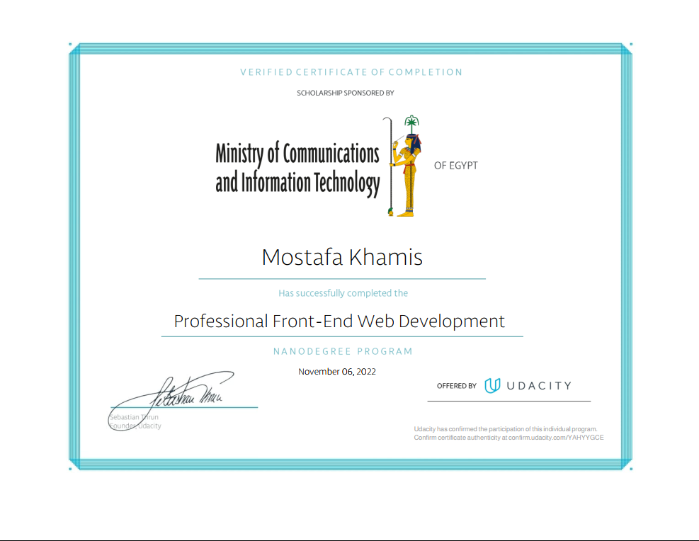
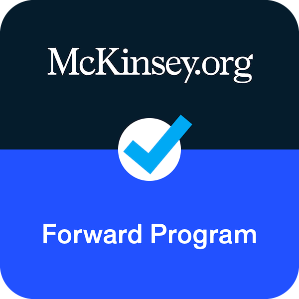

Certificates & Badges
A showcase of professional recognitions and verified expertise.

View Skills acquired & Program details
Program: Advanced Data Science and Web Intelligence Training.
Skills: Full-stack architecture integration, machine learning pipeline deployments, and advanced data visualization models.

View Competition achievements
Event: International AI & Web Development Hackathon.
Role: Lead Backend Engineer designing highly secure Django REST APIs capable of processing real-time system metrics.
Professional Work Experience
Past corporate positions and technical development roles.
Full-Stack Web Architect — Tech Solutions Corp
January 2024 — Present
Led a team of developers in constructing secure backend systems using Python and Django. Implemented efficient database management logic and optimized response speeds by 40% for multi-user business software.
Data Software Specialist — Innovate AI Labs
March 2022 — December 2023
Developed interactive web dashboards using responsive React frameworks. Specialized in connecting complex machine learning prediction models directly to consumer-facing analytics systems.